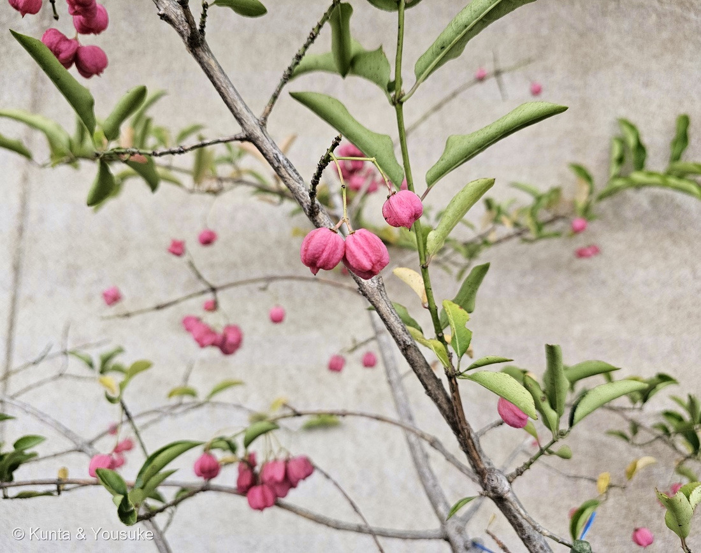

地図を読み込んでいるよ…
🔍 写真も地図も、押しているあいだ拡大して見られるよ（スマホは指を置いてすこし待ってね）。
🌍 の地図＝この子がもともと自生している場所を緑に。日本（北海道・本州・四国・九州の屋久島まで）・南千島・サハリン・朝鮮半島の南部・中国（Wikipedia「マユミ」）。⭐広い意味の E. hamiltonianus としては、ヒマラヤ（インド・ネパール・ブータン・パキスタン・アフガニスタン）やミャンマー・タイまで（三河の植物観察・英語版Wikipedia）。丘陵や山地の林のふちに生える（三河の植物観察）。
⭐東アジアからヒマラヤまでの子だよ＝日本（北海道〜屋久島）・南千島・サハリン・朝鮮半島の南部・中国（Wikipedia「マユミ」）。⭐図鑑が使う広い意味の E. hamiltonianus としては、インド・ネパール・ブータン・パキスタン・アフガニスタン・ミャンマー・タイまで（三河の植物観察・英語版Wikipedia）＝⭐学名のもとになった標本はネパールのもの（IPNI）。⚠ロシアは国まるごと緑になるけれど、ほんとうはサハリンと千島だけ。⭐丘陵や山地の林のふちに生える。⭐この通勤路の木は、植えられたものだと思う（⚠ぼくの読み）。
⚠ 地図は国（日本と中国だけ県・省）までしか塗れないから、ほんとうの分布より広く見えていることがあるよ。地図はだいたいの場所。正確なところは、上の文を見てね。
マユミ（真弓・檀）
Euonymus hamiltonianus Wall.（シノニム E. sieboldianus Blume）
別名 · ヤマニシキギ・カンサイマユミ・ユミノキ
ニシキギ科 · Celastraceae（ニシキギ属 Euonymus · ニシキギ目 Celastrales）
燻太さんの言葉「パステルカラーのピンク色に、少しざらついたような質感、他の植物には見られない雰囲気」── ⭐淡いピンクの角ばった実が、マユミのいちばんの目じるしだよ
⭐⭐⭐ 名前と学名の由来 ── 弓をつくった木
- ⭐⭐⭐ 和名の「マユミ」は、むかしこの木で弓を作ったことから（三河の植物観察：「和名はこの木で弓を作ったことから。」／Wikipedia「マユミ」：「昔この木から弓が作られたことに因む」）。⭐材が強くて、よくしなるから（Wikipedia「マユミ」：「古来より弓の材料として知られ」／三河の植物観察：「材は緻密でよくしなり」）。
- ⭐⭐ 「真弓」は、この木で作った弓のことでもあり、弓をほめていう言葉でもある（Wikipedia「マユミ」：「この木で作られた弓のことや、単なる弓の美称も真弓という」）。⭐伊勢物語の24段には「梓弓 真弓 槻弓 年を経て…」という歌があって、アズサ・マユミ・ツキ（ケヤキ）の3つの弓の木がならんで出てくる（Wikipedia「マユミ」が関連の項目として引く）。
- ⭐⭐ 英語の名前のほうは、弓ではなく「spindle（つむ）」＝羊毛をつむぐ道具の「つむ」を、ニシキギ属の木で作ったことから（英語版Wikipedia「Euonymus」：「this use is the origin of the British English name of the shrubs」）。⭐日本では弓、イギリスではつむ。どちらも「かたくて、しなやか」な材を生かした名前だね（⚠くらべかたは、ぼくの読み）。
- ⭐⭐ 学名 Euonymus hamiltonianus は、1824年にウォーリック（Wallich）がネパールの標本につけた名前（IPNI：Fl. Ind. 2: 403. 1824）。⭐種小名は「そのいちばんの発見者」にちなむ、と原記載に書いてある（IPNI の原記載の注：「after its most worthy discoverer」）。⚠その人がだれかは、ページには書いてなかったよ。⚠属名 Euonymus の意味は、確かめられる出典が見つからなかったので書かないでおくね。
- ⭐⭐ 学名の割れ＝植物の名前のデータベース WCVP（GBIF 経由）では E. hamiltonianus Wall. を正式な名前とし、日本で使われてきた E. sieboldianus Blume（1826〜27年）をシノニムにしている。⭐三河の植物観察と英語版Wikipediaも E. hamiltonianus。⚠日本の YList を引く Wikipedia「マユミ」は E. sieboldianus を正式な名前にしている。⭐350 カンナと同じく、図鑑では WCVP にそろえたよ。
⭐⭐⭐ この植物のこと ── ピンクの実がぶらさがる、落葉の小さな木
- ⭐⭐⭐ ニシキギ科ニシキギ属の、落葉の低木〜小高木＝高さ3〜5m（三河の植物観察）／3〜10m（Wikipedia「マユミ」）。
- ⭐⭐⭐ 葉は向かいあってつき（対生）、長さ5〜15cmの長楕円形で、ふちに細かい鋸歯がある（三河の植物観察：「葉は対生し、無毛、長さ5～15㎝の長楕円形、縁に細かい鋸歯がある。」）。⭐枝には、にぶい4つの稜がある（同）。⭐秋には紅葉する（同）。
- ⭐⭐ 花は5〜6月、直径1cmくらいの緑白色の4弁花で、目立たない（三河の植物観察・Wikipedia「マユミ」：「花色は薄い緑色で目立たず」）。⭐雌雄異株（Wikipedia「マユミ」）。
- ⭐⭐⭐ 実（蒴果）は長さ1cmくらいの倒三角形で、4つの稜がある（三河の植物観察）。⭐秋に熟すと、ふつう淡いピンク色になる（Wikipedia「マユミ」）。⭐白や濃いピンクの実の品種もある（同）。⭐実は冬まで枝に残り、ヒヨドリやメジロが食べに来る（同）。
- ⭐⭐ 材は緻密で、こけし・印鑑・櫛・細工物に使われる（三河の植物観察・Wikipedia「マユミ」）。⭐和紙の材料にもなったけれど、コウゾにとって代わられた（Wikipedia「マユミ」）。⭐実と紅葉がきれいなので、庭木や盆栽にもされる（同）。
- ⚠⚠ 実は毒がある（Wikipedia「マユミ」：「ただし、果実は有毒である」）。⭐種の油には、吐き気や下痢をおこす成分がふくまれる（同）。⚠ピンクでかわいいけれど、食べちゃだめだよ。
⭐⭐⭐⭐ 燻太さんの観察① ──「パステルピンクで、少しざらついた質感」
- ⭐⭐⭐ 燻太さんの言う「パステルカラーのピンク」は、マユミの実のいちばんの目じるし（Wikipedia「マユミ」：「秋に熟すとふつう淡紅色に色づく」）。
- ⭐⭐ 写真①の実は、4つの稜がはっきりした角ばった形で、表面に細かいしわのような質感が見える。⭐三河の植物観察の「4個の稜がある倒三角形」と同じ形だね。⚠ざらつきについての説明は出典には無かったので、ここは写真を見たぼくの読み。
- ⭐⭐ 細い柄でぶらさがるのも、写真①でよく分かる。⭐マユミの花序は、コマユミやニシキギより長い（三河の植物観察：「コマユミやニシキギは花序が短く」）＝⭐だから実が、長い柄の先でゆらゆらする。
⭐⭐⭐⭐ 燻太さんの観察② ──「弓のつるに使ったって、本当なのかな？」
- ⭐⭐⭐ 弓に使ったのは本当（三河の植物観察・Wikipedia「マユミ」）。⭐⭐ただ、出典に書いてあるのは「この木から弓を作った」こと＝⭐弦（つる）ではなく、しなる弓の本体（弓幹）に使った、という意味だよ（⚠「本体」と言いきったのは、「材がしなる」という説明からのぼくの読み）。
- ⭐⭐ しなって折れにくい材だから、弓にぴったりだったんだね（三河の植物観察：「材は緻密でよくしなり」／Wikipedia「マユミ」：「古来より弓の材料として知られ、名前の由来になった」）。
- ⭐ 伊勢物語にも「真弓」が弓の名前として出てくるくらい、むかしから知られた弓の木だよ（Wikipedia「マユミ」）。
⭐⭐⭐ 燻太さんの観察③ ──「裂けると赤い種子が顔をのぞかす」
- ⭐⭐⭐ 熟すと実の皮が4つに割れて、あざやかな赤い種が4つ出てくる（Wikipedia「マユミ」：「熟すと果皮が4つに割れ、鮮烈な赤い種子が4つ現れる」）。
- ⭐⭐⭐ でも、くわしく見ると、赤いのは「仮種皮（かしゅひ）」という、種をつつむ皮（三河の植物観察：種は「橙赤色の仮種皮」につつまれる）。⭐仮種皮は種を完全にはおおわず、種の先が少し見える（三河の植物観察：「仮種皮は種子を完全に覆わず」）。
- ⭐⭐ だから燻太さんが今度見るときは、「赤い皮のすきまから、種の先が見えるか」をさがすと楽しいよ。⭐この赤い仮種皮は、鳥に食べてもらって種を運んでもらうためのもの（英語版Wikipedia「Euonymus」：ニシキギ属の種は実を食べる鳥が運ぶ）。
⭐⭐⭐ 同定について ── マユミでほぼ確か、セイヨウマユミは宿題
- ⭐⭐⭐ ニシキギ属で確か＝対生の細長い葉・細かい鋸歯・細い柄の先の4稜の蒴果（写真①）。
- ⭐⭐⭐ マユミ＝淡いピンクの、角ばった4裂の実（Wikipedia「マユミ」）／実が分果に分かれない（三河の植物観察）。⭐ニシキギやコマユミは分果をつくるので、ちがう（同）。
- ⚠⚠ セイヨウマユミ（E. europaeus）は、写真だけでは落とせない＝セイヨウマユミも実はピンク〜赤で、葉は細長い（英語版Wikipedia「Euonymus europaeus」）。⭐見わけ＝葉の長さ（マユミ5〜15cm・三河の植物観察／セイヨウマユミ3〜8cm・英語版Wikipedia）と花のつくり（マユミは雌雄異株・Wikipedia「マユミ」／セイヨウマユミは両性花・英語版Wikipedia）。
- ⚠ 仮種皮の色ではあまり分けられない＝セイヨウマユミの種はオレンジ（英語版Wikipedia）だけど、マユミの仮種皮も橙赤色（三河の植物観察）だから。⭐次に通るとき、葉の長さを手のひらで測ってもらえたら決められるよ。
⏳ 宿題
- ⏳⭐⭐⭐ ①実が裂けたら、赤い種を見る＝赤いのは種そのものか、種をつつむ仮種皮か。種の先がのぞいているか（三河の植物観察）。
- ⏳⭐⭐ ②葉の長さを測る＝10cmをこえればマユミ（三河の植物観察・英語版Wikipedia）。
- ⏳⭐ ③5〜6月に、緑白色の4弁の花を見る（三河の植物観察）。
- ⏳⭐ おまけのニシキギ＝実が分果に分かれるところを、マユミとくらべたい（三河の植物観察）。
参考：Wikipedia「マユミ」（昔この木から弓が作られたことに因む・古来より弓の材料として知られ・単なる弓の美称も真弓という・伊勢物語24段・和紙の材料にもなったが楮にとって代わられた・落葉小高木3〜10m・花色は薄い緑色で目立たず・雌雄異株・秋に熟すとふつう淡紅色・小さく角ばった4裂の姿・熟すと果皮が4つに割れ鮮烈な赤い種子が4つ現れる・ヒヨドリやメジロ・果実は有毒・分布（北海道〜屋久島・南千島・サハリン・朝鮮半島南部・中国）・正式名を E. sieboldianus とする（YList））／三河の植物観察「マユミ」（和名はこの木で弓を作ったことから・E. hamiltonianus Wall.・葉は対生し長さ5〜15cmの長楕円形で細かい鋸歯・枝に鈍い4稜・花は5〜6月、緑白色の4弁花・蒴果は長さ約1cmの倒三角形で4稜、分果をつくらない・橙赤色の仮種皮は種子を完全に覆わず・コマユミやニシキギは花序が短く花弁が円く分果をつくる・材は緻密でよくしなる、こけし）／英語版Wikipedia「Euonymus hamiltonianus」（Afghanistan to Japan・one of the most common Euonymus species）／英語版Wikipedia「Euonymus europaeus」（leaves 3–8 cm・hermaphrodite flowers・seeds orange・spindles for spinning wool）／英語版Wikipedia「Euonymus」（wood used for spindles, the origin of the British English name・seeds dispersed by frugivorous birds）／IPNI（Euonymus hamiltonianus Wall., Fl. Ind. 2: 403. 1824・after its most worthy discoverer／E. sieboldianus Blume, Bijdr. Fl. Ned. Ind. 1147. 1826–27）／WCVP（GBIF 経由・E. hamiltonianus を正式な名前、E. sieboldianus をシノニムとする）／276 マサキ（図鑑のニシキギ科の1人目）